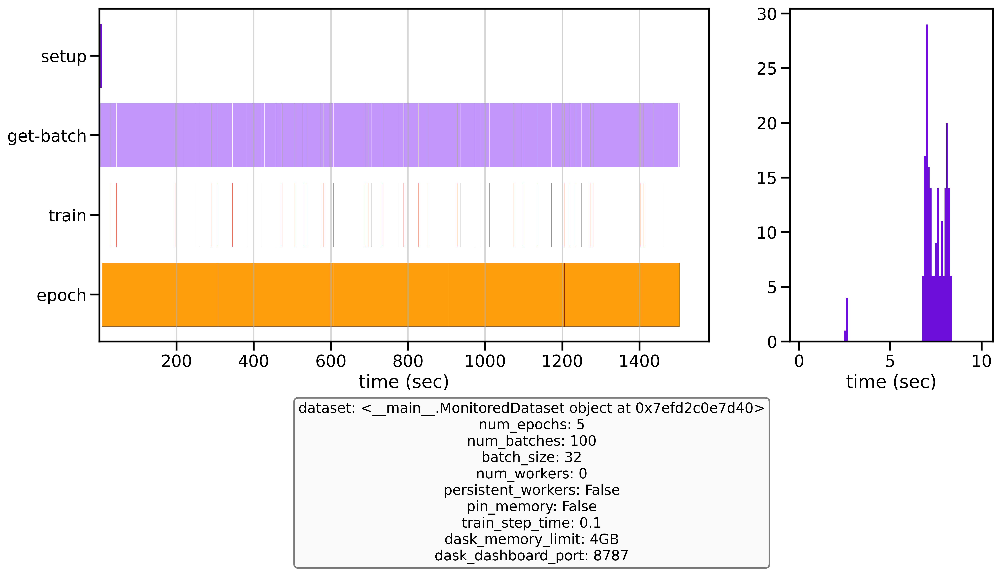
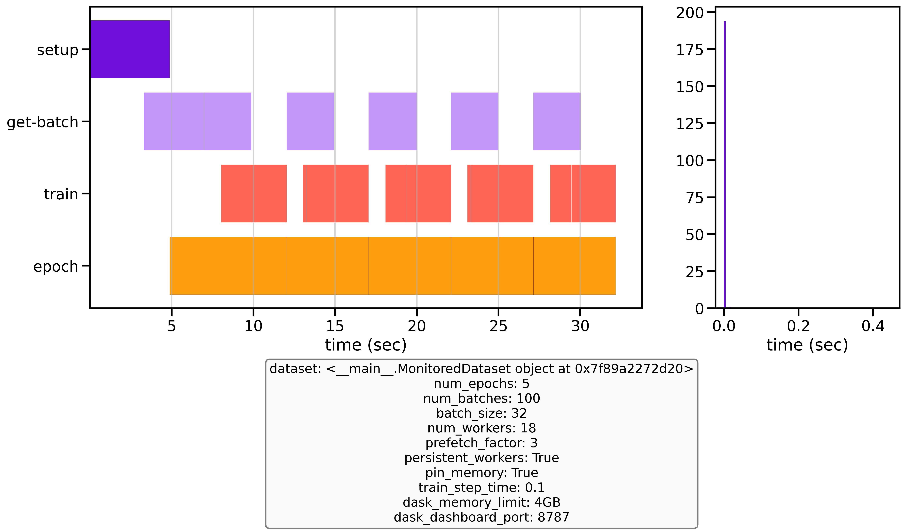

Efficient data loading can significantly reduce training time and costs
4. Optimizing the pipeline: Data/
├── benchmark_datapipeline_configurations.py # Main benchmark script
├── plot_benchmark_runs.ipynb # Analysis notebook
├── dummydataset.py # Dummy dataset for testing
├── utils.py # Utility functions
├── benchmark_logs/ # Benchmark results
└── benchmark_imgs/ # Visualizations
GPU Saturation: The key performance target.
CPU (cores):
Used by the main process and workers to (lazy) load, transform, and prepare data for training. You want high CPU usage (busy workers) but not so high that the OS or other processes starve. If your CPU utilization is peaking at 100% on all cores and the system becomes unresponsive or the throughput plateaus, you may have too many workers or threads.
python
import os
print(os.cpu_count())
RAM (used by CPU processed tasks):
Used by workers to load batches into memory.
vRAM (used by GPU):
During model training weights, gradients and calculations are stored here.
I/O Considerations
Bandwidth: The maximum rate of data transfers (e.g., from cloud storage to your instance)
Chunking: Use optimal chunk sizes to balance I/O overhead and memory usage
File Formats: Choose ML-optimized formats (Parquet, TFRecord, WebDataset, Zarr)
Streaming Workers (Dask) vs DataLoader Workers (PyTorch)
PyTorch DataLoader and streaming frameworks like Dask can be combined effectively to stream cloud data into your training pipeline, but it's crucial to understand they operate at different layers of the data process:
PyTorch DataLoader manages the training-specific data handling by:
__getitem__ methodStreaming frameworks (e.g. Dask) handles the low-level data access by:
These systems don't automatically coordinate with each other. The connection point occurs when a DataLoader worker calls __getitem__ on your Dataset, which then triggers Streaming frameworks (e.g. Dask) to materialize the required data chunks when calling a .load() function. By understanding this separation, you can optimize each layer independently:
It's important to avoid conflicting parallelism between these systems because too many concurrent processes and threads can lead to resource contention and degraded performance.
I have created scripts to help you optimize your data pipeline, but before we dive into the benchmarking and optimization, it is important to understand how everything works.
Understanding DataLoader Workers and Process Distribution When optimizing your data pipeline, it's important to understand how worker processes are distributed across your available CPU cores and to leave sufficient CPU resources for main processes and system overhead. Reserve 1-2 CPU cores per GPU for the main training process and system overhead. When using containerization solutions like Docker, you may need to reserve additional CPU resources for container management.
Single GPU setup: With a single GPU and one main training process, you'll have a single DataLoader that spawns num_workers processes. For example, on a machine with 20 CPU cores and 1 GPU, you should reserve 1-2 cores for the main process and system overhead, leaving about 18 cores for DataLoader workers.
Multi-GPU setup: With multiple GPUs (e.g., using DistributedDataParallel), each GPU has its own main process, and each main process creates its own set of DataLoader workers. For instance, on a machine with 8 GPUs and 160 CPU cores, you should reserve 8-16 cores for main processes and system overhead (1-2 per GPU), leaving approximately 144-152 cores to be distributed among all worker processes.
To avoid CPU contention, ensure the total number of worker processes does not exceed your available cores minus those needed for the main process. Without torch.compile, the main thread orchestrating the GPU (especially for high-performance hardware like an H100) can become a bottleneck if it has to compete with data workers. To prevent this, set num_workers = total_cores - 1 to keep one core dedicated to GPU control. While slight oversubscription can be beneficial when workers are idling on I/O, prioritizing a free core for the main process is generally safer unless torch.compile is used to reduce CPU overhead.
Batch size The set batch size is important as it dictates how much data is loaded into memory at once. The ideal batch size depends on your dataset characteristics, model complexity, and available GPU memory. You want a batch size that enables stochastic gradient descent, while having a stable enough learning signal. For my use case, 32 worked well, but you may need to adjust this based on your specific requirements. This batch size is needed because it is used in my optimization benchmark script later.
Cloud vs. Local Performance: Note that network bandwidth varies dramatically between environments. When moving from local (WiFi) to cloud training, you may see orders of magnitude improvement in data loading speed. In my case, I observed a 100x decrease in wait time when moving to the cloud. Always benchmark in the same environment where you'll be training, as the optimal configuration can differ significantly between local and cloud setups. High bandwidth allows more data to flow per second, while low bandwidth creates bottlenecks that can leave your GPU waiting for data.
No need to over-optimize the DataLoader: If your model is small or the GPU is not very powerful, there's no point in using 16+ workers or heavy parallel jobs when the GPU is already saturated. I have spent quite some time doing research on this, and it is important to think about this step as it can drastically increase your performance, but there is no need to do "grid search" such-like stuff for this. Follow my guide and your speed should already improve a lot. Experimenting endlessly with this also costs money and potential experimentation time. I'll tell you more on how to do it in a sec.
Dataset-level optimization is about making data access as efficient as possible. By storing data smartly (chunked, compressed appropriately, possibly colocated with training if remote), and by only doing the minimal necessary work for each access, you ensure that the raw data supply is fast. Once that is in place, DataLoader-level tuning can further amplify the throughput. If there are no parameters, chunking or file format to be optimized, focus on the dataloader instead. (when streaming from machine's disk memory, ssd or when streaming is all handled automatically). If applicable to your usecase, I will show how to approach this in the Appendix.
The DataLoader is critical for training performance. Key parameters to optimize:
num_workers: Controls parallel data loading subprocesses
Too few: GPU waits for data
NOTE: num_workers is not about CPU's but processes, and a process may use more or less than 1 cpu core.
prefetch_factor: Batches loaded in advance per worker
Default is 2, which works for most cases
Total prefetched = num_workers * prefetch_factor
pin_memory: Enables faster CPU to GPU transfers
Set to True when using GPU
Slightly increases CPU memory usage
persistent_workers: Keeps workers alive between epochs
Reduces worker initialization overhead
Significantly reduces epoch transition time
multiprocessing_context: Controls worker process spawning
Even with an efficient dataset, proper DataLoader settings are crucial.
I created two files to help you optimize your data pipeline:
suitable for any pytorch Dataset object
Contains a configurable train_step_time parameter (default: 0.1 seconds)
Follow these steps to systematically optimize your data pipeline:
benchmark_configurations.py.from dummydataset import DummyDataset as YourDataset # replace with your dataset
Optional: Measuring the time it takes to (load a mini batch and) complete a single training step. This information is useful for properly configuring the benchmark script parameters to accurately reflect your real-world training conditions. For this, you can run the timing_benchmark.py script that is in the folder of 4. Optimizing the pipeline: Model. and then change the train_step_time parameter in the benchmark_configurations.py script.
Establish a baseline Start with minimal configuration:
num_workers = 0 (single-process loading)
prefetch_factor = None (default behavior)persistent_workers = Falsepin_memory = False
Implement a sensible default configuration
E.g. for a system with 10 CPU cores and 1 GPU:
Experiment with different configurations
Test variations systematically:
prefetch_factor valuesRun benchmarks and analyze results
benchmark_configurations.py to test all configurationsplot_benchmark_runs.ipynb (use the *.log files, not the *_workers.log files. They make sure the *.log files are correct)Use the plotting notebook to visualize differences between runs and identify which configuration has the lowest wait/batch fetching time. I do not explicitly measure vRAM/CPU utilization in these tools, the primary goal is to significantly improve training time with reasonable effort. Having that said, watch for these warning signs:
Below are example benchmark results showing the significant difference between an unoptimized baseline configuration and an optimized one:


Unoptimized baseline vs optimized configuration performance after 3 epochs with 50 batches
With these simple optimizations, my dataloader became 35 times faster than the baseline. Earthmover, who made the first version of this benchmark script was able to run 15x faster. This performance improvement is transformative for training - where others might only complete 4 epochs in a given timeframe, I was able to run 140. This acceleration dramatically reduces overall training time, costs and allows for more experimentation and model iterations.
Now that we have the data-part of the pipeline optimized, lets focus on optimizing the Model